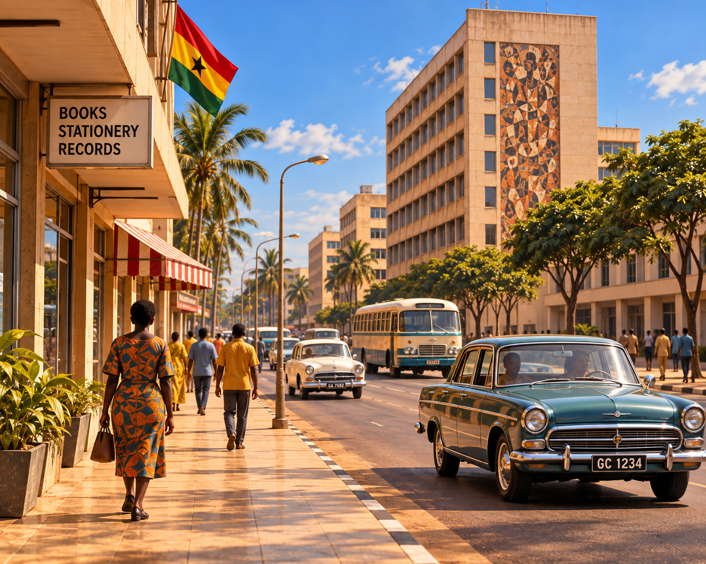

ACCRAGhana · 1967
Independence-era city · Modern Ghana
An independent capital in transition
In 1967 Accra was the capital of an independent Ghana, with established commercial districts, modernist architecture, public institutions, and complex political change. This illustration evokes the urban atmosphere rather than documenting an identifiable street.
Behind the Investigation: Research Note
Behind the Investigation explains the generative AI capabilities, technologies, and design decisions demonstrated by each Institute investigation.
Institution
The Institute of Unnecessary Research
Investigation
18 — Meanwhile, in 1967... / Accra, Ghana, 1967
Primary Capability
Historical Synthesis and Visual Storytelling
Research Question
How can AI-assisted visual storytelling convey the modernity and civic life of post-independence Accra while distinguishing established history from artistic reconstruction?
Method
A user-approved image anchors an interactive, self-contained scene with six authored historical annotations, subtle ambient animation, and evidence disclosures.
How It Works
Visitors select accessible image markers or interpretive tabs. JavaScript displays prewritten historical explanations; the illustration and annotations are static assets.
Technical Implementation
Static HTML, CSS, JavaScript, and locally embedded Kingsland, Borel, and Nunito Sans fonts. The experience is deterministic; no live LLM or external API runs when visitors use the site.
Historical and Visual Limitations
Ghana gained independence in 1957 and became a republic in 1960. A military coup overthrew President Kwame Nkrumah in February 1966; the National Liberation Council governed in 1967. The avenue, buildings, mural, shop, vehicles, textiles, and people shown are an illustrative composite, not verified individual locations or artifacts.
Research Starting Points
Ghana Museums and Monuments Board; Encyclopaedia Britannica entries on Ghana and Kwame Nkrumah; Ghana National Archives. These support contextual investigation, not the pictured buildings or mural.